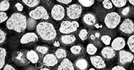

-
Porosity
Osteoconductive bone grafts must stabilize the site, support a clot and provide space for new bone formation. GUIDOR calc-i-oss granules are openly microporous with pore sizes in the 1 μm to 10 μm range. Highly porous calcium phosphate materials provide increased osteoconductivity and bone formation in comparison with materials without micropores as an open micropore system allows for optimal fluid circulation (1, 2, 3,).
Versatility
Unlike traditional particulates which are presented in a gritty and brittle form, GUIDOR calc-i-oss is manufactured as stable granules. Granules are easy to handle and allow for a variety of application options such as:
- Mixing with blood
- Mixing with blood preparation (e.g. PRP)
- Mixing with autogenous bone
References:
1. Habibovic P., Sees T. M., van den Doel M. A., van Blitterswijk C. A. and de Groot K.: Osteoinduction by biomaterials – physicochemical and structural influences J Biomed Mater Res A ( 2006 ) 77( 4 ): 747-62.
2. Hing K. A., Annaz B., Saeed S., Revell P. A. and Buckland T.: Microporosity enhances bioactivity of synthetic bone graft substitutes J Mater Sci Mater Med (2005) 16(5): 467-75
3. Habibovic P1, Yuan H, van der Valk CM, Meijer G, van Blitterswijk CA, de Groot K.: 3D microenvironment as essential element for osteoinduction by biomaterials. Biomaterials. 2005 Jun;26(17): 3565-75.
-
100% Resorption – More Space for New Bone
Space for regeneration
GUIDOR calc-i-oss CLASSIC consists of a phase-pure ß-TCP 100% synthetic material with no elements of animal or human origin. Macropores provide space for vascularization and bone regeneration. The open micropores of GUIDOR calc-i-oss CLASSIC allow for optimal fluid circulation.
Replaced by bone
GUIDOR calc-i-oss CLASSIC is biocompatible and osteoconductive. Material resorption and bone regeneration proceed in parallel. GUIDOR calc-i-oss CLASSIC is fully resorbed within 5 to 15 months. In clinical practice, resorption of phase-pure ß-TCP is observed after shorter healing periods. No foreign material remains in the body.
Histological analysis
Human histology, 8 months after sinus floor augmentation with GUIDOR calc-i-oss CLASSIC. The disintegrating material (grainy appearance) is surrounded (in purple) by newly formed bone (1).
Reference:
1. Image courtesy Dr. Jaroslaw Pospiech, Poznan, Poland and Dr. Heiner Nagursky, University of Freiburg in Breisgau, Germany.
-
Partial Resorption and Long-Term Volume Preservation
The next generation of calc-i-oss: calc-i-oss CRYSTAL+ *
GUIDOR calc-i-oss CRYSTAL+consists of a biphasic calcium phosphate (BCP) compound formed in the ratio 60% Hydroxyapatite and 40% phase-pure ß-TCP. The material is 100% synthetic with no elements of animal or human origin. Macropores provide space for vascularization and bone regeneration. Open micropores of GUIDOR calc-i-oss CRYSTAL+ allow for optimal fluid circulation.
From an original round granule, the CRYSTAL+ version of calc-i-oss presents now an irregular-shaped granule which allows even more space for new bone formation. Being biphasic (60%HA + 40% β-TCP) and partially resorbable, the CRYSTAL+ version becomes integrated into the new bone formation and so derives greater benefit from the increased structural porosity of the + version.
NB : The CLASSIC version of calc-i-oss (100% β-TCP) remains with round granules as it resorbs in parallel to bone formation. See details in description of calc-i-oss CLASSIC.
Integrated into bone
GUIDOR calc-i-oss CRYSTAL+ is biocompatible and osteoconductive. As the phase-pure ß-TCP resorbs, it is replaced by new bone which embeds itself within the remaining hydroxyapatite component creating a stable scaffold, for long-term volume preservation.
Histological analysis
GUIDOR calc-i-oss CRYSTAL granules (brown) embedded into newly formed bone (pink) and discernible within the granule. (Ground section) 8mm defect 2 months after placement n the sheep model.
Image courtesy Dr. Antonio Flichy, Valencia, Spain and Dr. Heiner Nagursky, University of Freiburg in Breisgau, Germany.
*Availability is country-dependent. Contact your local distributor for more information.
-
Resorption formats
GUIDOR calc-i-oss CLASSIC
(fully resorbable)GUIDOR calc-i-oss CRYSTAL+ *
(partially resorbable)
*The next generation of calc-i-oss : From an original round granule, the CRYSTAL+ version of calc-i-oss presents now an irregular-shaped granule which allows more space for new bone formation. Availability is region-dependent. See details in description of calc-i-oss CRYSTAL.
Product GUIDOR calc-i-oss CLASSIC Material Phase-pure ß-tricalcium phosphate (> 99 %) Units 3 x 0.5 ml 3 x 1.0 ml Granule size 315 – 500 µm 500 – 1000 µm IFU Download IFU (EU/1) Download IFU (EU/2) Product GUIDOR calc-i-oss CRYSTAL+ Material Biphasic calcium phosphate (60 % hydroxyapatite / 40 % ß-TCP) Units 3 x 1.0 ml 3 x 2.0 ml Granule size 450 – 1000 µm IFU Download IFU (EU/1) Download IFU (EU/2) *Availability is country-dependent. Contact your local distributor for more information.
Note: please refer to local IFU for further indications, precautions and possible adverse effects.